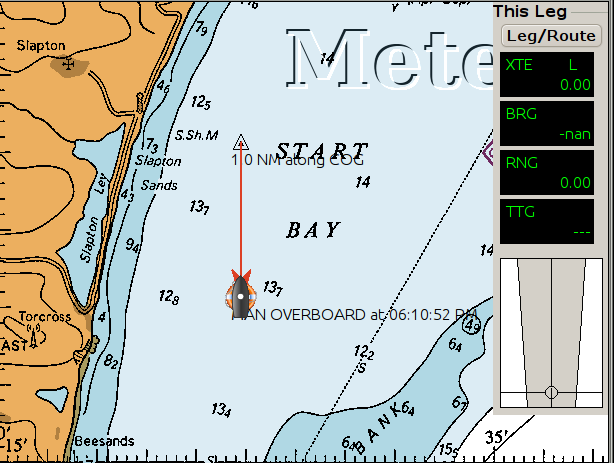
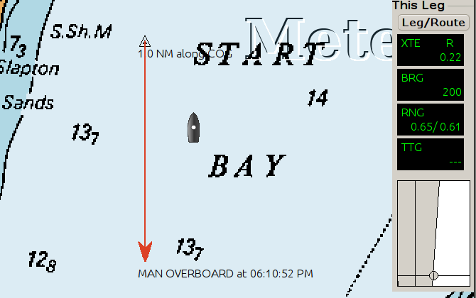
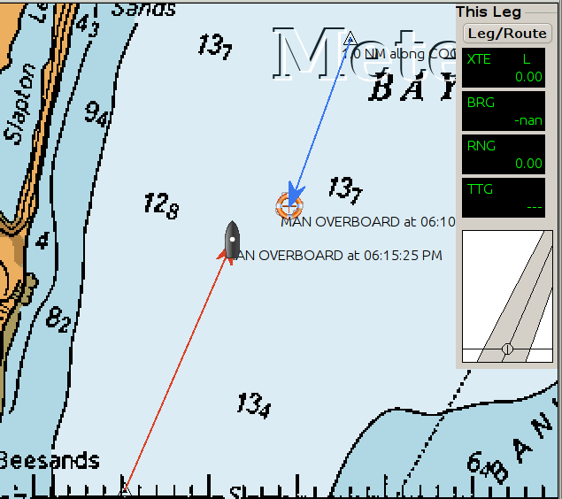

Mann über Bord
Als Alternative zu dieser Funktion: Siehe unter AIS SART
Mit dem Mann über Bord Button  von der Werkzeugleiste oder mit den Tasten ⌘ + Leertaste
kann an der aktuellen Position eine Mann über Bord Markierung gesetzt werden.
von der Werkzeugleiste oder mit den Tasten ⌘ + Leertaste
kann an der aktuellen Position eine Mann über Bord Markierung gesetzt werden.
Es erscheint dann sofort eine blinkende Markierung mit dem Aussehen ähnlich dem MüB Button
mit dem Text "MANN über BORD at Zeitstempel" auf der Karte an der aktuellen Position.
Es wird eine temporäre Route von etwa einer Seemeile in Fahrtrichtung zum MüB erzeugt und aktiviert. Diese temporäre Dreieck-Marke wird "1.0 NM along COG" genannt.
Ist COG (Kurs über Grund, course over ground) nicht verfügbar, wird keine Route erzeugt, aber die MüB Position wird markiert. Das kann passieren, wenn kein GPS angeschlossen ist, das GPS Signal zeitweise nicht verfügbar ist oder die Geschwindigkeit so niedrig ist, daß das GPS kein COG berechnet.
Die temporäre Route kann mit dem Rechts-Klick Menü gelöscht werden, aber der Wegpunkt MüB kann nur mit Hilfe des Routen-Managers verändert oder gelöscht werden. Mit Rechts-Klick auf die Wegpunkt-Eigenschaften kann ein anderes Symbol zugewiesen werden und dann mit Rechts-Klick dieser Wegpunkt (ehemals MüB Punkt) gelöscht werden.
Es können mehrere MüB Markierungen gesetzt werden und es werden dann mehrere temporäre Routen erzeugt. Die aktive Route ist immer mit dem letzten MüB verbunden.
Vorsicht in Gewässern mit starker Strömung oder Tide. Sowohl die Person als auch das Boot können abgedriftet sein und OpenCPN weiß davon nichts.
Hier wurde die MüB Marke gerade gesetzt:

Das eigene Boot hat sich entfernt und die MüB Marke ist in 0,65 Seemeilen und 200 Grad.
Man kann versuchen, die Dreiecks-Marke zu verschieben.

Es wurde eine zweite MüB Marke gesetzt:
